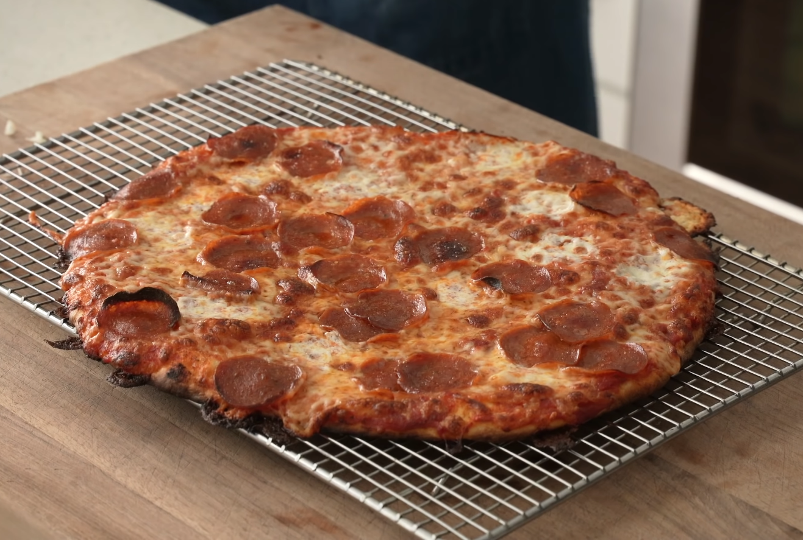

EZ THIN CRUST PIZZA
Home

my go to weeknight pizza recipe
An easy 1 hour rise pizza dough and sauce for those
last minute thin crust pizza cravings that will easily beat the shit out of any frozen pizza
I Personally love eating this as a weeknight meal after a long day and im really craving pizza bc it doesn't require making dough in advance
Ingredients
Dough
- 210g Beer
- 350g Flour
- 5g Salt
- 8g Sugar
- 7g Yeast
- 15g Olive Oil
Sauce
- 28oz Can Crushed Tomatoes
- 100g Tomato Paste
- 12g Salt
- 20g Sugar
- 2g Dried Basil
- 1g Chili Flake
- 2g Garlic Powder
- 2g Onion Powder
T.O.P.P.I.N.G.S
- Full fat aged mozz
- Cubed whole milk mozz
- peperoni
- bubble gum
Steps
Dough
- Heat beer over low for 20-30 sec or until temp reaches about 98F/36C.
- Into the bowl of a food processor measure flour, salt, sugar, yeast, olive oil.
- Spin on high for 20-30 sec until just combined.
- Stream in warmed beer and continue to spin until dough forms into a shaggy ball.
- Flip dough onto a floured surface and knead for about a minute.
- Divide dough into 2 equal sized pieces (about 300g each).
- Form into round balls, cover with damp towel and allow to rest at room temp for 15min.
- Place each ball onto an oiled piece of parchment and top with another piece of oiled parchment.
- Place each ball onto an oiled piece of parchment and top with another piece of oiled parchment.
- Once rolled out, allow dough rounds to rise at room temp for 30 to 40 minutes while you prepare the sauce and toppings and your oven preheats (Preheat oven and pizza stone or steel to 550F/287C)
Sauce
- Into a high sided container add crushed tomatoes, tomato paste, salt, sugar, basil, oregano, chili flake, garlic powder, and onion powder.
- Spin with immersion blender to break down to smooth, but still has texture.
Building the Pizza
- spoon about 3-4tbsp of sauce across dough
- evenly spread shredded mozz, followed by fresh mozz.
- Add additional toppings of choice (pepperoni, italian sausage, sliced onion, and parm is my go to).
- Bake for 6-7min.